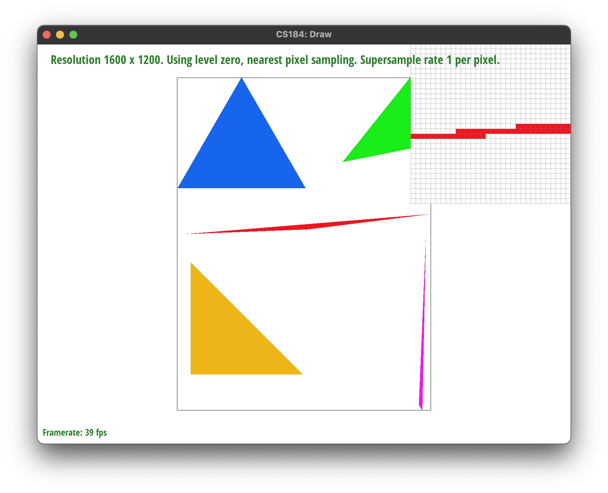
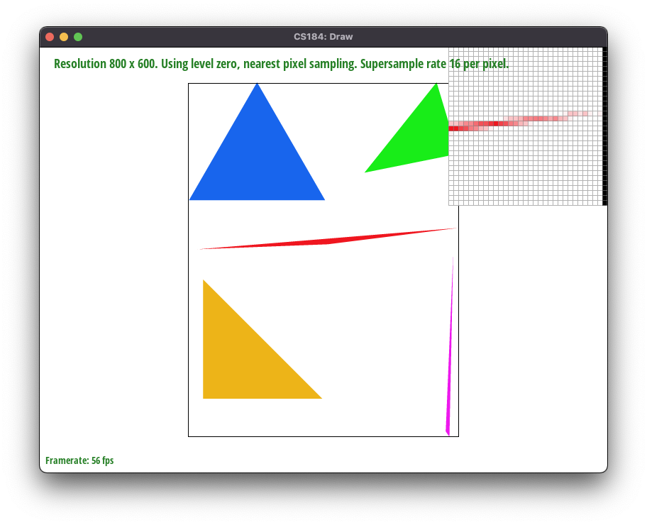
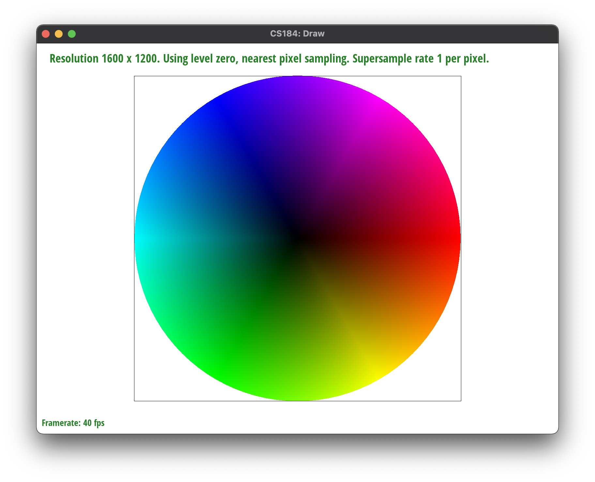
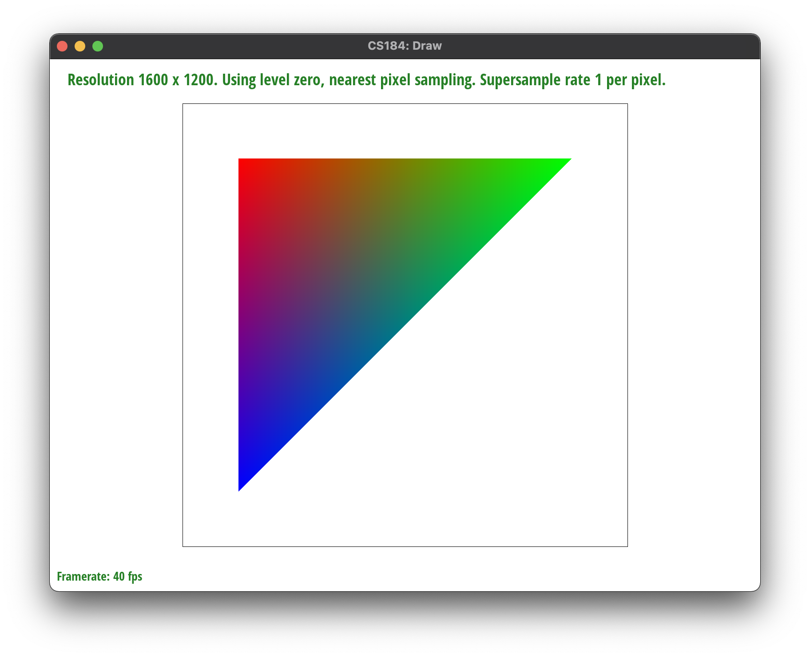
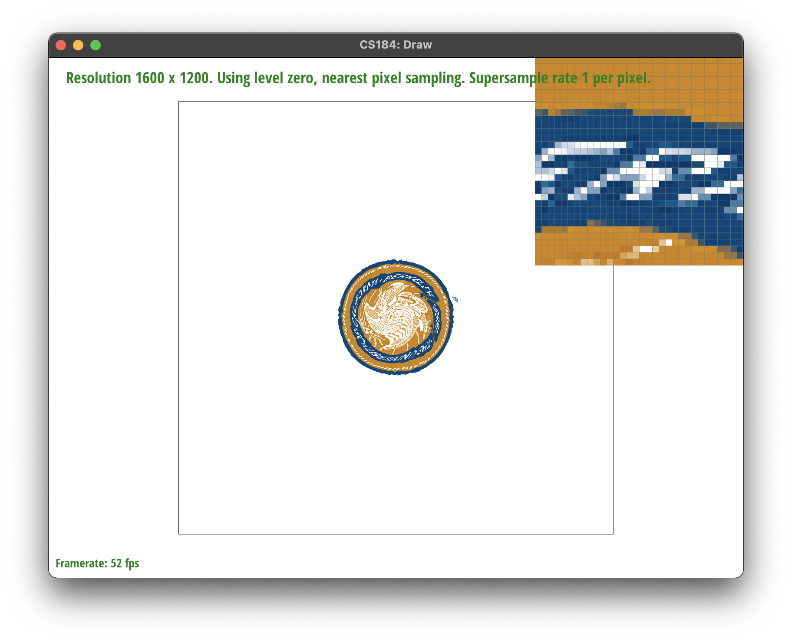
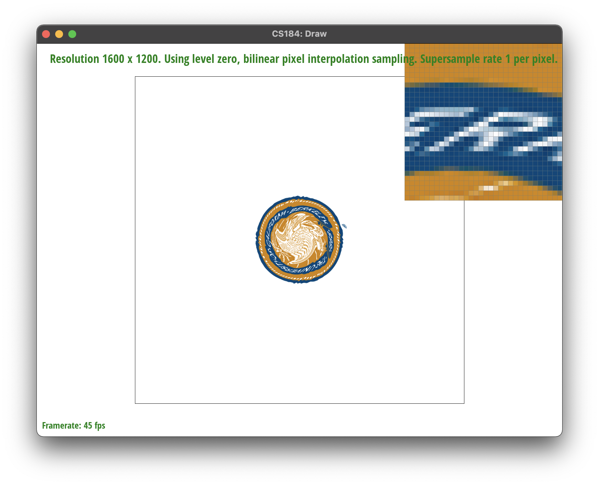

Give a high-level overview of what you implemented in this project. Think about what you've built as a whole. Share your thoughts on what interesting things you've learned from completing the project.
In this project, we implemented a Rasterizer for the svg file format.
In order to rasterize triangles, we will first create a bounding box for the triangle. Then for each point in the triangle, we will use the three line test to find out whether the center of the pixel is inside the triangle. We will do the test by computing for the line between the edges of the triangle, computing the normal line perpendicular to the edge and testing whether the point is on the inside part of the line by taking the dot product of the two points. We do this for all the points and if the point is on the interior of the line for all of the lines, then we know that the point is on the inside of the triangle.
Here is an example 2x2 gridlike structure using an HTML table. Each tr is a row and each td is a column in that row. You might find this useful for framing and showing your result images in an organized fashion.
|

|
In supersampling, we will divide up each pixel into smaller segments and sample from each segment. This will allow us to reduce high frequencies and prevent jaggies. We do this by dividing each pixel into midpoints of the subsamples and averaging the values in the pixel to combine and create the final image.
This was implemented by adding two loops within each pixel to loop through each subsample sample_rate times. We still call the inside method to check if the subsample point is within the triangle and write the output the sample_buffer vector. This stores each pixel's subsample color points which we will then use to get the final color for the output. In the resolve_to_framebuffer method, we will find the final color for each pixel by averaging the subsample point colors and get our final image.
|
|
|
|

|
We see these results from increasing the subsampling size because we are reducing the size of the subsampling which leads to more smooth changes in the final image pixels. Gradual changes in colors allow us to reduce anti aliasing from jaggies and reducing the high frequency changes in the image.
The cubeman is now a very nice purple color and is waving with his right hand with his left hand on his hip.
|

|

|
In this example, with a triangle on the right side, we have a triangle with corners of red, blue, and green. The intermediate colors between them are created from the combination of relative proximities to each of the vertices. We can see that the middle of the triangle blends all of the colors together while the corners have the pure colors.
Pixel Sampling is the process of obtaining the pixel from a texture image onto the screen image. We can implement this by using nearest pixel or by bilinear sampling. These are two different methods of obtaining a corresponding screen image pixel from a point on the texture image. We can use nearest pixel to get the closest sampled pixel to our point on the texture image, we can do this by rounding our point and then sampling the texture image. The other process of bilinear sampling involves using a linear interpolation to get the final point which is interpolated between the 4 closest points to our point on the texture image. We can achieve this with a lerp function which will take a linear combination between points to give us an interpolated point.
|

|

|
|
|
|
In these pictures, we can see that bilinear pixel sampling gives us an images that is blended more smoothly. The nearest pixel sampling with 1 subsample image is clearly very pixelated while bilinear helps smooth the texture out and subsampling will also have a similar result in creating an image that is more blurred and reduces antialiasing. There is a large difference between the pixel sampling methods is there is a high frequency change in the image where the nearest sampling will give very pixelated and jaggy result since it will take a single closest while bilinear pixel sampling will be able to blurr the image and take subsamples that are combined between multiple surrounding pixels.
Level Sampling is the process of finding the right mipmap level to use for the corresponding image. We do this by
taking the derivative of 1 pixel with respect to dx and dy, then using Barycentric coordinates to convert it into the
uv space. This allows us to see how stretched out or compressed our image is and will allow us to determine which
mipmap level the image should be at. We implemented mipmap level zero, nearest level sampling, and bilinear level. The
mipmap level zeros uses only the level zero mipmap with the highest resolution. The nearest level sampling will calculate
the max derivative and take the log base 2 then round to the nearest mipmap level. The bilinear level will interpolate between the
two closes mipmap levels, taking the floor and ceiling of the level value, finding the texture color for both levels, then
linearly interpolating between the two colors.
Pixel sampling is able to run relatively quickly to the original algorithm since it will just be finding the point
directly from the texture map, however bilinear pixel sampling may take up more time since we will need to do 3
lerp functions, pixel sampling will be the worst at antialiasing power because it applies the pixel sampling over
the entire image and can make the entire image crisp or blurry. Level sampling employs the use of mipmaps which are
images but at multiple resolutions and uses the image to figure out the best mipmap level to use that will create
the clearest image. This takes up more memory usage because we need to store the additional mipmaps however it
performs well at antialiasing because it can change blurriness or reduce high frequencies at different areas. The
runtime also takes a bit longer since we need to compute barycentric coordinates for different mipmap levels,
however performs well at creating an image that is antialised.
Changing the number of pixels allows us to create more subsamples per pixel and sample the image more. This works
well at reducing high frequncy changes int eh image and thus works well for antialiasing, however it had a large
impace on runtime in that each subsample must be sampled. The memory impact will depend on the number of subsamples
since the memory storage for pixel colors will be multiplied by the number of subsamples.
If you are not participating in the optional art competition, don't worry about this section!